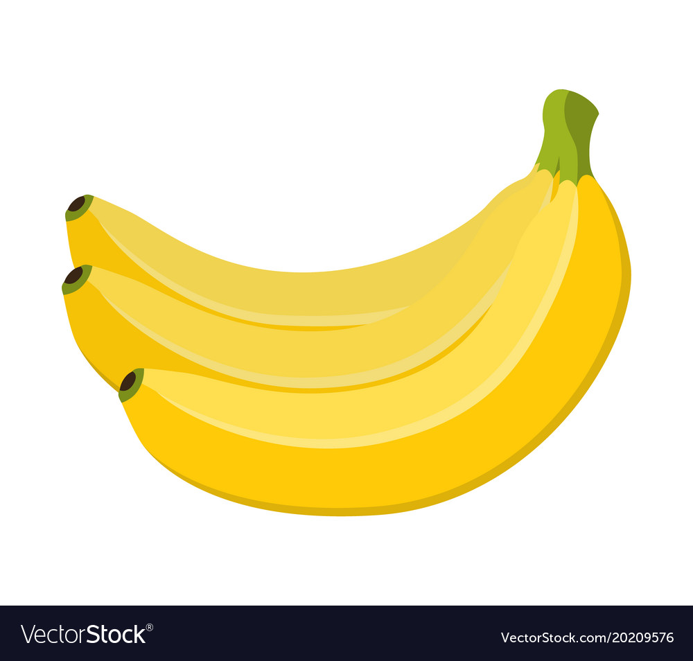

Some food and their Nutritious facts

Banana
Lets start with a ripe yellow banana. A very healthy food, right? Lots of potassium! But scroll down to find out which humdrum food has twice as much of the essential electrolyte bananas are famous for.
Serving size: 1 medium banana (7-8" long)
Recommended Daily Allowance (RDA): fiber 10.1%, iron 2.1%, magnesium 8.9%, potassium 9%, zinc 1.9%, vitamin C 12.5%, folate 6%, vitamin A 0.5%

Potato
That's right, the humble potato! Potatoes are one of the richest
food sources of potassium, which is important for muscle
contraction and helps regulate fluid balance in the body. They
also have a significant amount of vitamin C, folate, and
magnesium.
Serving size: 1 medium potato (2.25-3.25" diameter)
RDA:
Beans
We end our nutrition journey with the lowly bean — a food with an undistinguished reputation. Yet beans are some of the most nutritionally dense foods for humans. Just make sure to eat them with some starch or meat, as well as some fat, to get their full benefit.
Serving size: 1 cup (182 g0
RDA:
Strawberry
Strawberries make a delicious pairing with chocolate. Also, did you know a cup of strawberries has more than 100% of your RDA for vitamin C?
Serving size: 1 cup halves (152 g)
RDA:
Dark Chocolate
Okay, time for dessert. Let's start with some dark chocolate — another food with substantial magnesium, along with beneficial fats and antioxidants.
Serving size: 1 oz (28.35 g)
RDA: